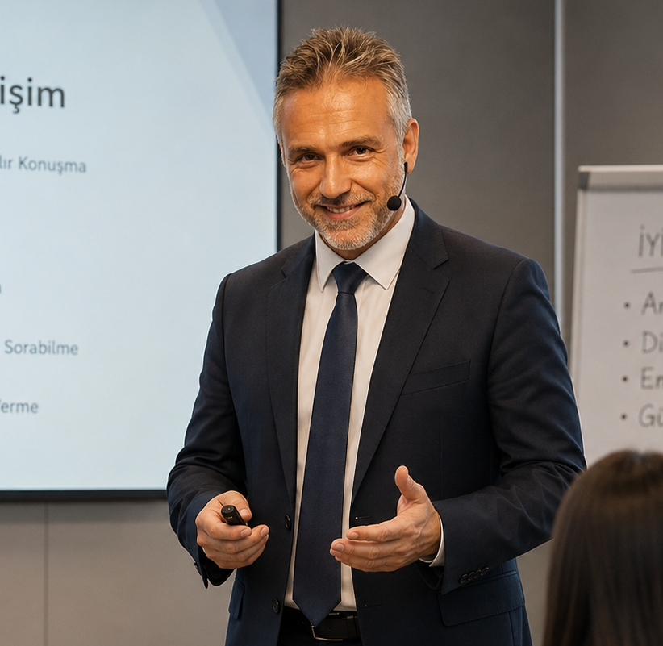

Burak Özbay
Hakkımda

1975 İstanbul doğumluyum. Cumhuriyet Lisesi ve Anadolu Üniversitesi Kamu Yönetimi mezunuyum.
- 971997–1999: Garanti Bankası AGF Sigorta, pazarlama / müşteri temsilcisi.
- 991999–2006: Bayrak Radyo Televizyon Kurumu — sunucu, yönetmen, programcı. TRT Eğitim Dairesi'nin Kıbrıs'taki diksiyon ve sunum eğitimlerine katıldım. Türk Hava Kurumu için 2 yıllık bir TV programı hazırladım. "Eğitime Farklı Bakış" programını yönettim.
- 062006–2009: İstanbul'da Rumeli Televizyonu'nu kurdum, genel müdürlüğünü yaptım. "Seçime Doğru" ve "Meclise Doğru" programlarını hazırladım.
- 092009–2011: Saha Pazarlama ve Organizasyon Şirketi'nde proje uzmanı olarak çalıştım.
- +TRT, Star TV, Kanal D, Show TV, NOW, ATV ve TV8 gibi kanallarda yönetmenlik ve editörlük yaptım (Ben Bilmem Eşim Bilir, Çarkıfelek, Karavan, Big Brother, Utopia, Doya Doya Moda, Zahide Yetiş ile Yeniden Başlasak).
- 042004'ten beri kurumsal eğitim planları hazırlayıp sunuyorum.
- 262026'dan itibaren yapay zeka alanında KODO Next Ai platformunun kurucu ortağıyım.
Vizyon
Uzmanlık alanlarımla firmalarda gerçekleştirdiğim çalışmalarla akılda kalan, kendi tarzını ortaya koyabilen bir yapıya sahip olmak.
Misyon
Hızlı hareket eden, sürekliliği olan, gelişimi devam eden, yenilikleri uygulayan bir yapıda hareket etmek.